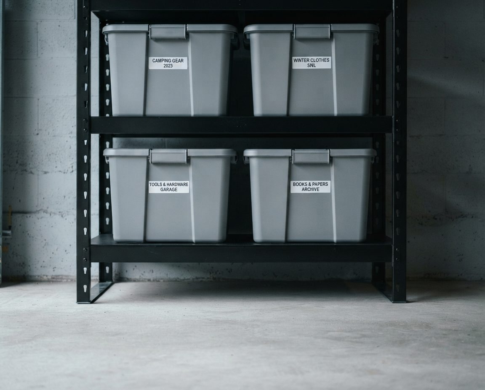
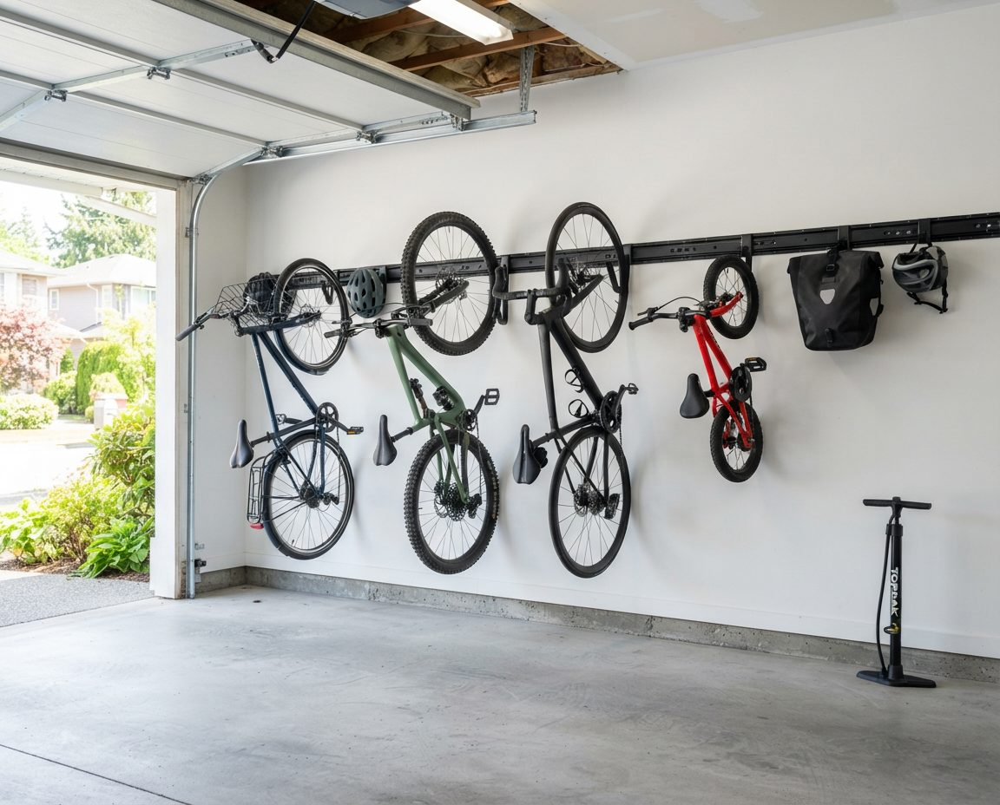
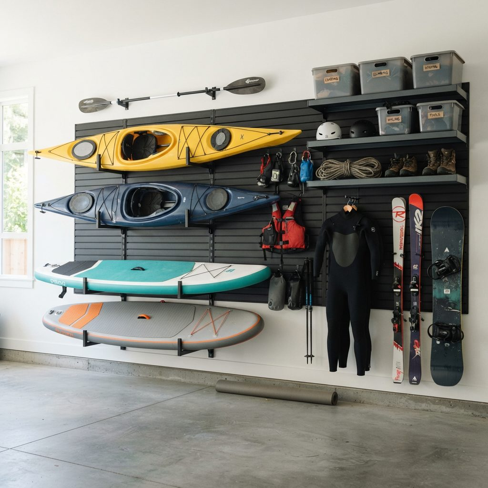
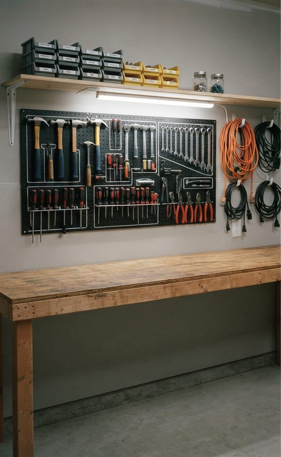

Materials: What Survives, What Fails
Every storage decision in a Vancouver garage should be filtered for moisture tolerance before anything else — before price, before looks, before load rating. Here's the honest ranking.
| Material | Damp performance | Verdict for a Vancouver garage |
|---|---|---|
| Powder-coated steel | Excellent | Best all-round choice. Strong, humidity-tolerant, allows airflow. Keep feet off bare slab. |
| Galvanised wire shelving | Excellent | Airflow through the shelf is a real advantage here. Great for bins and gear. |
| Plastic / resin | Excellent | Completely immune to moisture but sags under weight. Light loads only. |
| Marine-grade plywood | Good | Works if sealed on all six faces including cut edges. More effort than it's worth for most. |
| Uncoated / mild steel | Fair | Corrodes at the feet where it meets a damp slab. Acceptable if raised and painted. |
| Standard plywood | Poor | Delaminates at the edges within a few winters. |
| MDF & particleboard | Very poor | Swells, sags, crumbles. The single most common failure we're called to replace. |
| Cardboard | Fails completely | Never. Moisture sponge, collapses under load, preferred rat nesting material. |


The single highest-return change you can makeSame garage, same climate. Cardboard on the slab wicks moisture and collapses; gasketed opaque bins on raised steel shelving don't. Roughly $200 of bins solves it.
Why MDF cabinets keep failing here
Flat-pack MDF garage cabinets are widely sold and perfectly good in a dry, heated garage. In Vancouver they're installed on the slab against an exterior wall, and within two winters the bottom shelf has swollen, the back panel has bowed and there's mould behind. It isn't a defective product — it's the wrong material in the wrong position. If you already own some, raising it 10 cm on risers and pulling it 5 cm off the wall buys you years.
Shelving Compared, With Real Costs
| Type | Typical cost | Load | Best for | Watch out for |
|---|---|---|---|---|
| Wall-mounted adjustable steel rail | $150–$400 per wall | High | The default recommendation — nothing touches the floor, height adjustable as needs change | Needs solid fixing into framing; useless on unsound old walls without blocking |
| Freestanding steel unit | $120–$300 each | High | Renters, or walls that can't be drilled | Feet corrode on a damp slab — always raise on risers |
| Galvanised wire shelving | $100–$250 per unit | Medium–high | Bins and gear; airflow through the shelf is a genuine advantage here | Small items fall through — use bins or shelf liners |
| Plastic resin shelving | $80–$180 per unit | Low | Light bulky items, chemicals, garden supplies | Sags permanently under weight; don't load with tools |
| Slatwall with shelf brackets | $300–$900 per wall | Medium–high | Mixed storage where the layout will keep changing | PVC slatwall handles damp far better than MDF-cored slatwall |
| Custom cabinetry | $4,000–$15,000+ | High | Showroom finish, enclosed dust-free storage | Specify moisture-resistant cores; confirm the warranty covers an unheated garage |
| Site-built timber shelving | $150–$400 in materials | High | Odd-shaped or very old garages where nothing off-the-shelf fits | Must be sealed on all faces or it becomes a mould substrate |
Overhead Racking and Ceiling Height
Overhead racking is the highest-value addition to most Vancouver garages, because it puts bulky seasonal items — camping gear, off-season sports equipment, holiday decorations, luggage — in the one part of the room that's both unused and driest. Warm air rises, so ceiling-level storage is meaningfully less damp than floor-level storage in an unheated garage.
But there are two Vancouver-specific checks to make before buying anything.
Check your actual ceiling height
Overhead racks are generally designed around a standard modern garage. A great many Vancouver garages aren't one. Detached lane garages built in the 1920s and 1930s frequently have low ceilings, and under-house garages in Vancouver Specials and similar homes often have limited headroom with beams and ducting crossing the space. Measure to the lowest obstruction — not the highest point — and check the garage door track's swing clearance through its full travel, which is where most rack purchases go wrong.
Check what you're hanging it from
Ceiling joists in a pre-war Vancouver garage may be undersized by modern standards, cut for services, or degraded where a roof has leaked. Racks rated at 250 to 600 lb are only rated when fixed into sound structure with the correct fasteners. We assess the joists before installing, and on older garages that occasionally means adding blocking or advising against ceiling storage entirely.
Practical rules: heaviest items closest to the wall where joists are best supported, keep within the stated rating with margin, and never store anything overhead that you'd be unhappy to have fall — which in a seismic zone like the south coast of BC is a more than theoretical consideration.
Wall Systems: Slatwall, Pegboard, Rails
Wall storage is where a Vancouver garage gains most of its usable capacity, because it moves everything out of the wet zone at floor level.
- Slatwall — the most flexible option. Accessories reposition without new holes, which matters when your storage needs change. Specify PVC slatwall rather than MDF-cored: the MDF versions swell in a damp garage and the slots lose their grip. Typically $300–$900 per wall installed.
- Pegboard — cheapest useful wall storage, excellent over a workbench for hand tools. Use metal or PVC pegboard here; hardboard pegboard softens and sags in damp. Mount on furring strips so it stands off the wall — which also gives you the air gap.
- Rail systems — a horizontal track with hooks that slide and lock. Very strong for long-handled tools, ladders and garden equipment. Cheaper than slatwall, less flexible for shelving.
- Direct-mount heavy hooks — the cheapest option and entirely adequate for bikes, ladders, hoses and wheelbarrows, provided each one hits framing. Not flexible, but it works and costs very little.
Whatever you choose, leave an air gap behind it on exterior walls. Flush-mounted wall systems on a damp Vancouver exterior wall create exactly the condensation trap that produces mould where nobody looks for it.
Bins and Containers
The single highest-return change most Vancouver garages can make, and it costs very little.
- Gasketed lids, not just snap lids. A rubber gasket is what keeps humidity out. Snap-on lids without a seal don't.
- Opaque, not clear. Contrary to standard advice everywhere else. Sealing beats visibility here, and gasketed bins are usually opaque. Label well and it's a non-issue.
- Uniform sizes. Mixed bin sizes waste shelf depth. Pick one or two sizes and stick to them.
- Never on the slab. Even sealed bins collect condensation underneath when sitting directly on damp concrete.
- Add desiccant to vulnerable bins. Cheap silica gel packs in bins holding fabric, paper, electronics or photographs. Replace annually.
- No cardboard, ever. Worth repeating. It's a moisture sponge, it collapses when damp, and in a city with Vancouver's rat problem it's nesting material.
Gear Storage: Bikes, Boards, Skis
Vancouver garages hold more outdoor equipment than garages almost anywhere else in Canada, and generic storage advice handles it badly.
| Gear | Best storage | Vancouver-specific note |
|---|---|---|
| Daily-ride bikes | Vertical wall hooks at accessible height | Never on the slab — drivetrain corrodes from below. Keep out of window sightlines. |
| Seasonal / spare bikes | Ceiling hoist or high horizontal rack | Anchor rather than hang where the garage opens onto a lane. |
| Paddleboards & surfboards | Ceiling straps or horizontal wall racks | Never store wet. A board bag holding seawater is a mould source within days. |
| Kayaks & canoes | Wall-mounted J-cradles or ceiling slings | Support at two points to avoid hull deformation over a long wet winter. |
| Skis & snowboards | Vertical wall racks in season, high shelf out of season | Store dry and waxed — edges surface-rust quickly in a damp garage. |
| Camping & hiking | Gasketed bins, grouped by trip type | Sleeping bags lose loft permanently if stored compressed in damp. Store indoors if you can. |
| Wetsuits | Hung on wide hangers, never folded | Neoprene perishes in sustained damp. A winter on the floor usually finishes a suit. |
| Roof racks & boxes | Wall-mounted brackets or ceiling | Bulky and awkward; wall mounting recovers real floor area. |



Six Mistakes We Get Called In to Undo
- MDF cabinets on the slab against an exterior wall. The most common by a wide margin. Swollen within two winters, mould behind.
- Cardboard box storage. Collapses, wicks moisture, feeds rodents. Every Vancouver garage we clear has some.
- Overhead racks bought without measuring door track clearance. Installed, then found to foul the door through part of its travel.
- Shelving fixed into drywall without hitting framing. Holds for months, then fails all at once under load.
- Everything flush against exterior walls. No air gap, condensation trap, mould found two years later behind the shelf.
- Storage designed with no zone for what actually arrives. Recycling, deliveries, sports kit and returns have no home, so they land on the floor — and once the floor is storage, the system is finished.
Three Budget Levels, Itemised
| Essential — $600–$900 | Complete — $1,200–$1,800 | Comprehensive — $2,000–$2,500 | |
|---|---|---|---|
| Shelving | Adjustable steel rail, one wall | Adjustable steel rail, two walls | Steel rail plus PVC slatwall run |
| Overhead | — | One 4×8 rack | Two racks plus ceiling bike hoist |
| Wall system | Heavy direct-mount hooks | Rail system with hooks | Full PVC slatwall with accessories |
| Bins | 12–16 gasketed opaque | 20–30 gasketed opaque | 30+ gasketed, uniform sizing |
| Bike storage | Wall hooks | Vertical racks plus hooks | Vertical racks, hoists and anchoring |
| Gear specific | — | Board or ski racks | Full gear wall: boards, skis, kayak cradles |
| Damp control | Risers, desiccant packs | Risers, desiccant, air-gap furring | All of the above plus sealed cabinet for vulnerables |
The honest headline: the Essential tier delivers most of the practical benefit. What the higher tiers buy is flexibility, capacity for a lot of gear, and appearance. Nobody needs to spend five figures to have a garage that works.
Where We Install Garage Storage
City of Vancouver neighbourhoods
Metro Vancouver — tap a city for local detail